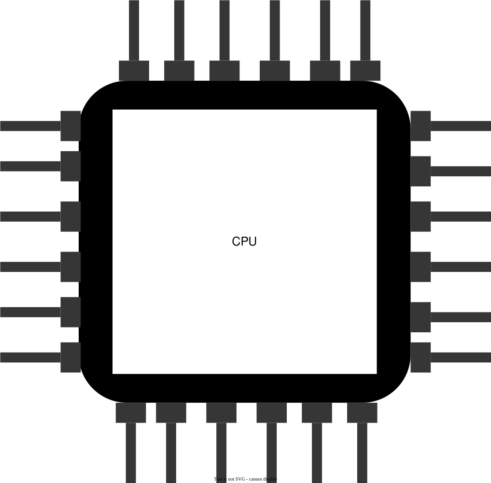
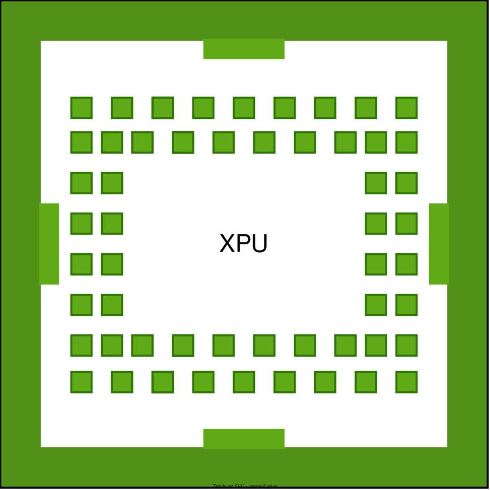
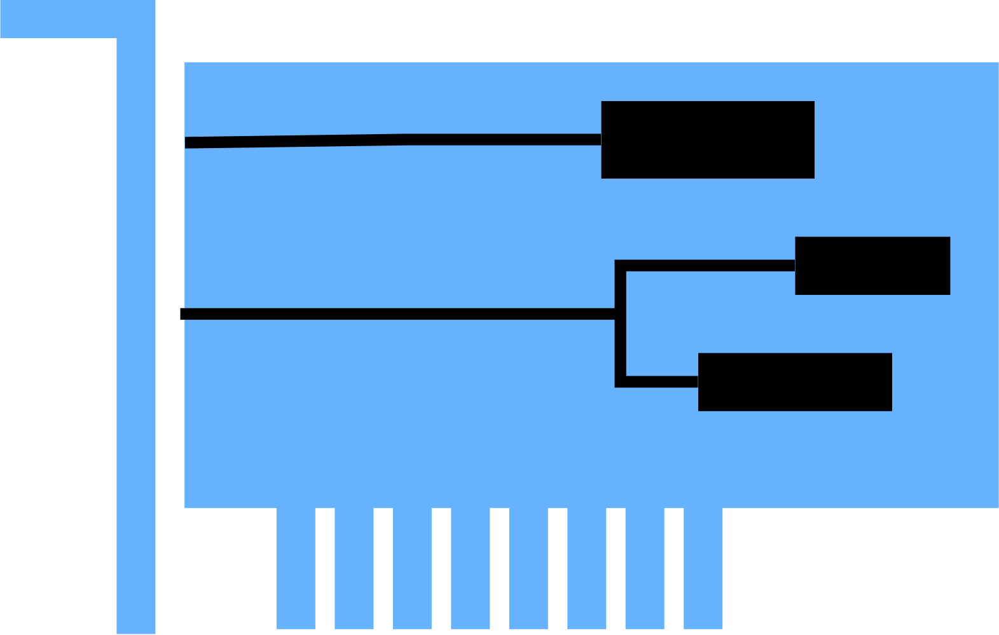
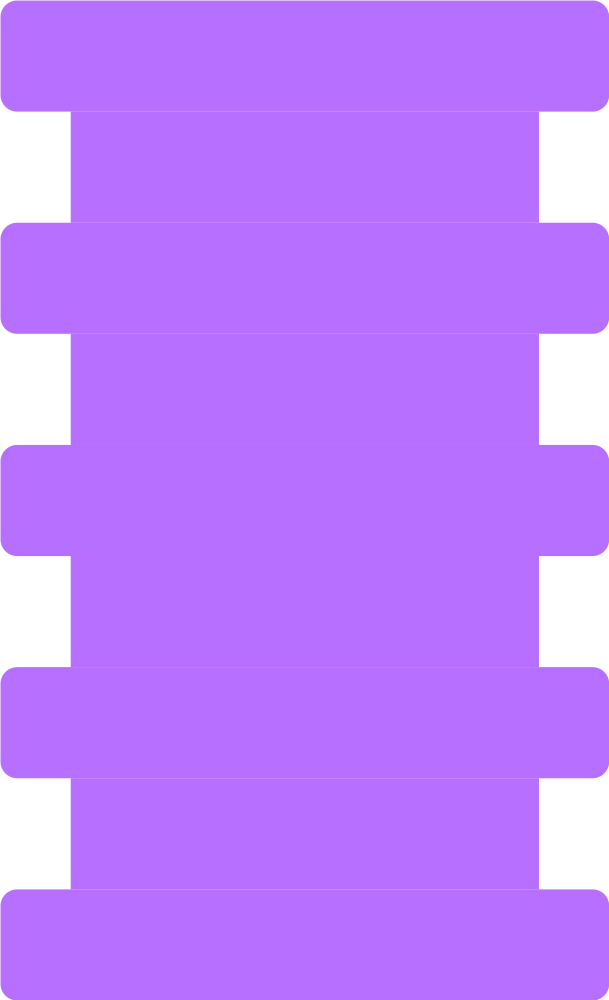
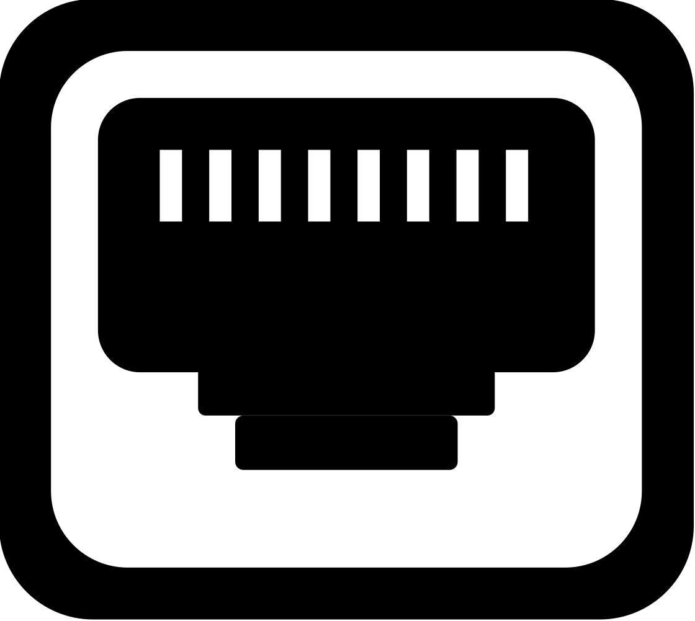
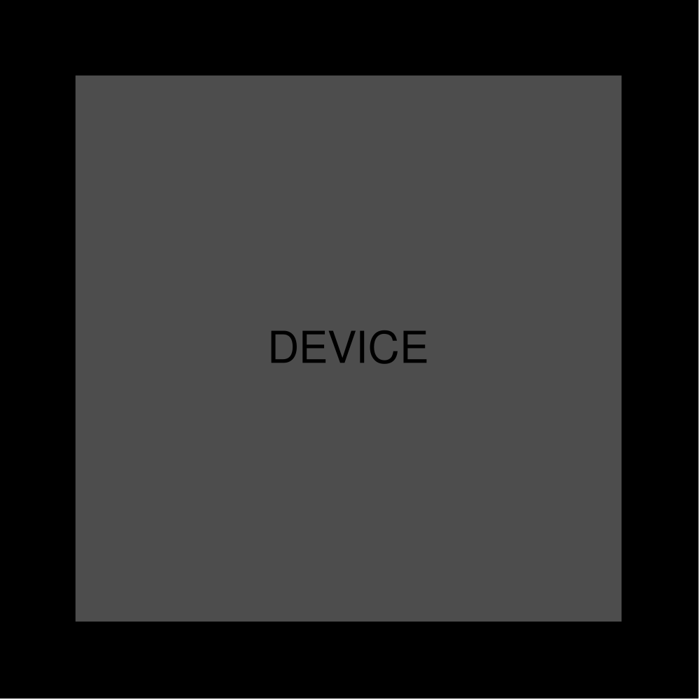
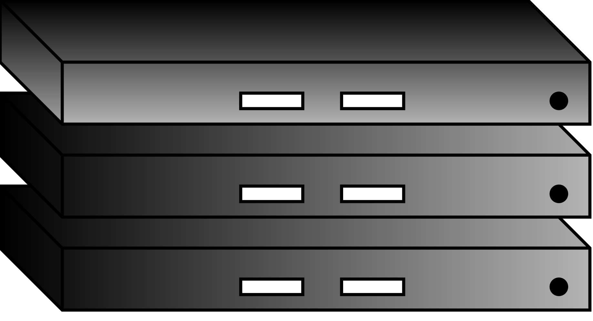

InfraGraph Visualizer
Infrastructure
Back
?
Node Types

CPU

XPU

NIC

Switch

Port

Custom Device

Server
Interactions
Click drillable node → explore internals
Hover node/edge → view attributes
Scroll → zoom in/out
Hold a node → see connected nodes
Loading graph data…
⚙ Filter
Filter Graph
✕
Search Nodes
Select Nodes
Show Connections
Clear
Node Types
All
None
Link Types
All
None
Apply Filters
Reset